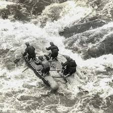

White Water Rafting brings people together through adventure and teamwork on the river. We provide safe, exciting experiences for guests of all skill levels. Our goal is to create fun, lasting memories while respecting nature.


White Water Rafting brings people together through adventure and teamwork on the river. We provide safe, exciting experiences for guests of all skill levels. Our goal is to create fun, lasting memories while respecting nature.
White Water Rafting began with a small group of river enthusiasts who shared a passion for adventure and the outdoors. What started as a few guided trips for friends and local visitors quickly grew into a trusted rafting company known for exciting experiences, skilled guides, and a strong commitment to safety.

Over the years, we have welcomed adventurers of all ages and backgrounds, helping them create lasting memories while exploring the beauty and power of the river.